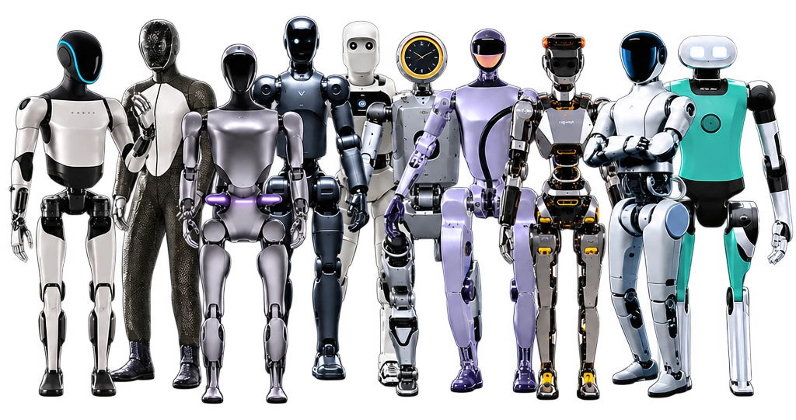
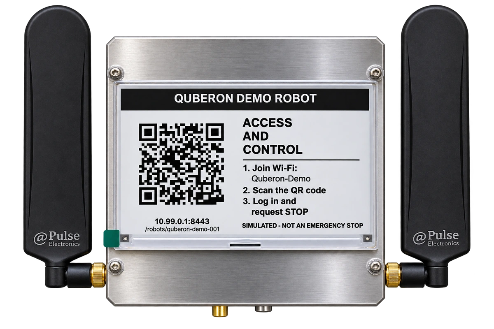
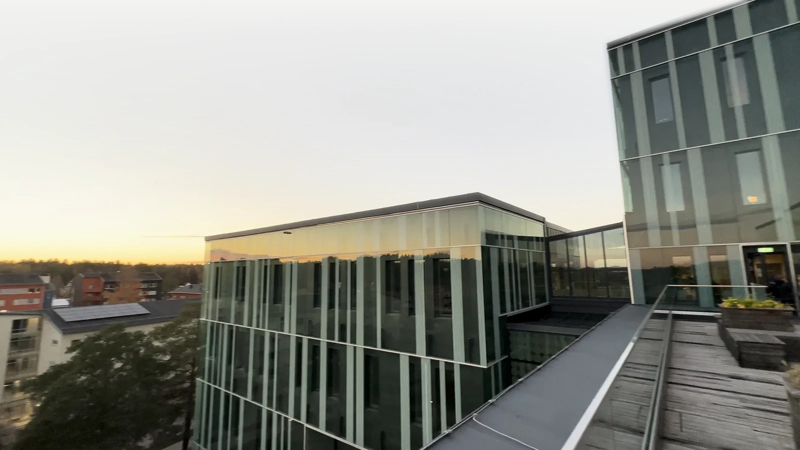

Make human intent clear.
We are developing a manufacturer-independent hardware and software module that recognizes spoken stop commands, visual gestures, and physical emergency-stop inputs, connecting them to the robot's existing safety systems.


Quberon is building a manufacturer-independent safety and control interface for humanoid robots.
As robots begin working alongside humans, there is no common way to intervene when a robot behaves dangerously, or to manage safety and operating permissions across different manufacturers.
Explore the intervention concept ↓We are developing a manufacturer-independent hardware and software module that recognizes spoken stop commands, visual gestures, and physical emergency-stop inputs, connecting them to the robot's existing safety systems.
Starting with industrial humanoids, Quberon will provide a common interface for human intervention, robot identity, access control, and operational monitoring.
Our system is designed to integrate with platforms such as NVIDIA Halos, while supporting the safety engineering and compliance documentation required under European machinery regulations.
Who can intervene? What should happen next? What evidence will show the outcome?
The intended approach starts with these questions for each robot and operating environment.
Define the intervention request: who is acting, the intended command, and the context in which it is made.
Design intention only. Not a live system, safety function, validated architecture, or test result. Each physical integration requires platform-specific engineering and validation; evidence recording must not become a blocking dependency for intervention.
Rust-based cryptographic authorization and a Copper (Cu29) robotics experiment form part of Quberon's engineering work. The focus is explicit permissions, traceable decisions, and reproducible behaviour.
Rust's ownership model prevents many memory errors in safe code. It does not eliminate logic flaws or the need for security review.
Compile-time checks help prevent data races in safe Rust. Real-time behaviour still needs system-level measurement.
High-level interfaces can compile without added runtime overhead. No comparative ROS performance claim is made.
Types can encode valid states and key-handling constraints. Cryptographic design still requires independent scrutiny.
The repository documents a simulated STOP-request workflow, a Rust secure core, and a Copper record/replay experiment. These are development artifacts, not evidence of safe physical humanoid control.
No safety-rated emergency stop, physical humanoid deployment, independent security audit, or certification is claimed. The source and its limitations are available for technical review.
Review quberon-core ↗Our founding principle
Control before autonomy.
To make human intervention across robot manufacturers predictable, enforceable and auditable—even when the AI, network or operational platform fails.
This mission describes our intended direction, including resilience to failure. It is not a claim that every implementation already delivers that behaviour.
“Autonomy made safe.” is a brand promise, not evidence that a product is safe. Product claims should still specify supported robots, tested conditions and limitations.
This safety interface becomes the foundation for a broader robotics control and service platform.
Human intervention, robot identity, access control, and operational monitoring. Starting with industrial humanoids and manufacturer-specific integration work.
Quberon will allow businesses to operate heterogeneous robot fleets, securely delegate tasks, verify authorization, and monitor robot activity independently of the underlying hardware or AI models.
The same infrastructure will support Robotics-as-a-Service, enabling robot owners to offer their machines for paid work, with automated contracts, usage-based billing, and revenue distribution.
We intend to generate revenue through per-robot subscriptions and service transaction fees. Our long-term goal is to become the trusted infrastructure connecting robot manufacturers, operators, owners, and customers.
Cryptographically verifiable ownership and control records, potentially supported by blockchain, can later enable new financing and shared-ownership models for robotic assets.
This is a long-term service-layer possibility. Blockchain, billing, and financial settlement must never be prerequisites for a robot STOP or any control-path decision.
No. Quberon is in development. The current repository describes simulation work, not a safety-rated emergency stop or physical humanoid control. Any physical integration needs platform-specific safety engineering, validation, and applicable conformity assessment.
The next step is translating prototype behaviour into testable, platform-specific requirements. That means integration work, failure analysis, and evidence that can be inspected.

Interested in manufacturer integration, an industrial use case, or the engineering behind Quberon? A contact form will be added here later.